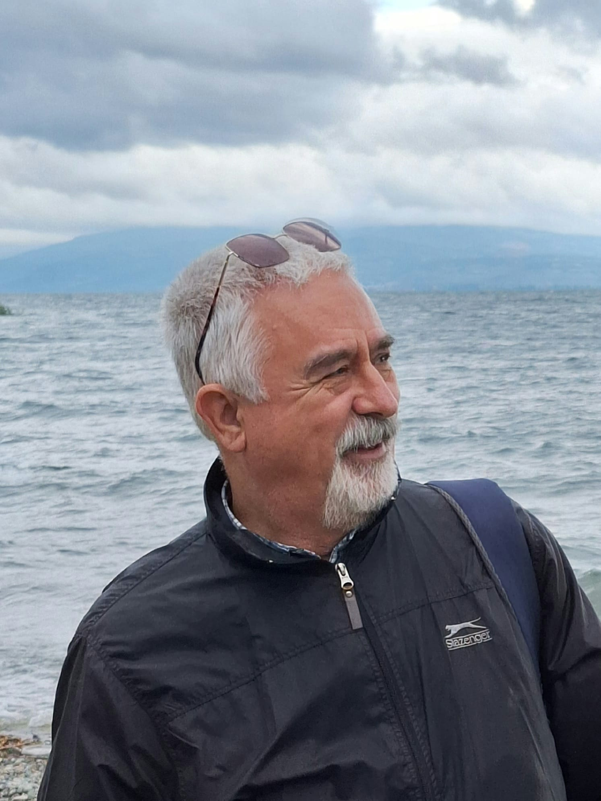

Sulak alan ekosistemlerinde ekolojik riskler, iklim değişikliği, insan baskıları, doğa temelli çözümler ve dijital izleme teknolojileri üzerine çok disiplinli bir bilimsel buluşma.
Sulak alanlar; biyolojik çeşitlilik, karbon depolama, su döngüsünün düzenlenmesi ve kıyı koruma işlevleri bakımından yeryüzünün en hassas ve en kritik ekosistemleri arasında yer almaktadır. Ancak Antroposen çağında hızlanan insan faaliyetleri, iklim değişikliği ve arazi kullanım dönüşümleri bu ekosistemleri çok boyutlu ekolojik risklerle karşı karşıya bırakmaktadır.
Bu çalıştay, Türkiye’de Antroposen çağında sulak alanların karşı karşıya olduğu ekolojik riskleri, insan kaynaklı baskıları, yönetim sorunlarını ve sürdürülebilir çözüm yaklaşımlarını çok disiplinli bir perspektifle tartışmayı amaçlamaktadır.

Bu çalıştay, Doç. Dr. Topçu Ahmet ERTEK’in Antroposen çağında ortam degradasyonu, çevresel değişim ve coğrafi süreçler alanındaki bilimsel katkılarına saygı amacıyla düzenlenmektedir. Dr. Ertek, Türkiye fiziki coğrafyası, jeomorfolojisi ve kıyı ekosistemleri üzerine yaptığı uzun soluklu akademik çalışmalarıyla nesiller boyu yerbilimcilere rehberlik etmiştir.
Çalıştay kapsamında tartışılacak ve taranacak 20 temel akademik konu başlığı.
Bu çalıştay, akademik üretkenliği en üst düzeye çıkarmak ve sulak alan ekosistemlerimizin geleceğini şekillendirmek için tasarlanmış seçkin bir platformdur.
Türkiye'de sulak alan risklerini çok disiplinli bir bakışla tartışmak ve farklı alanlardan yerbilimcilerle iş birliği kurmak.
Antroposen ve iklim değişikliği bağlamında güncel bilimsel yaklaşımları, teori ve saha tecrübelerini değerlendirmek.
CBS, uzaktan algılama, yapay zekâ ve dijital ikiz teknolojilerinin pratik saha uygulamalarını paylaşmak.
Sürdürülebilir restorasyon yaklaşımları ve doğa temelli çözümleri bilim dünyası ve politika yapıcılara görünür kılmak.
Seçili bildiriler için indeksli dergide (SCI/SCI-E kapsamında) özel sayı yayını sürecine katkı sunmak.
Çalıştay oturumları, arazi gezileri ve sosyal programlar.
22–24 Ekim 2026Çanakkale Onsekiz Mart Üniversitesi, Anafartalar Yerleşkesi.
Eğitim FakültesiEtkinlik kalitesi ve yoğun bilimsel tartışma ortamını korumak için.
Maksimum 20 BildiriBildiriler özgünlük, bilimsel yeterlilik ve tema uyumu açısından değerlendirilir.
Çift-Kör HakemliÖzet bildiri değerlendirme süreci devam etmektedir. Bilim kurulu tarafından kabul edilen bildirilerin listesi 5 Eylül 2026 tarihinde duyurulacaktır.
Bilim kurulu değerlendirmesi sonucu kabul edilen bildiriler e-posta ile duyurulacaktır.
Çalıştay kitabında ve özel sayı değerlendirmesinde yer alacak tam metinlerin gönderilmesi.
Oturumların, davetli konuşmacıların ve arazi gezisi rotasının detaylı ilanı.
Açılış töreni, bilimsel sunumlar ve sulak alan izleme panelleri.
Çalıştay kapsamında kabul edilen ve başarıyla sunulan seçili bildirilerin SCI (Science Citation Index) kapsamında taranan saygın bir uluslararası akademik dergide özel sayı (Special Issue) olarak yayımlanması planlanmaktadır.
Seçilmiş makaleler derlemesi hakem sürecine tabidir.
Çalıştay bilim kurulu tarafından onaylanan ve 22–24 Ekim tarihleri arasında sunulacak seçkin bilimsel bildiriler hakkında bilgi.
Çalıştay bilim kurulu tarafından onaylanan ve 22–24 Ekim tarihleri arasında sunulacak olan seçkin bilimsel bildiriler. Çağrı metnine ulaşmak için dökümanı indirebilirsiniz.
Kabul edilen bildirilerin ayrıntılı listesi, değerlendirme süreci tamamlandıktan sonra bu sayfada ilan edilecektir.
ÇOMÜ Eğitim Fakültesi, Anafartalar Yerleşkesi, Çanakkale
Yakında duyurulacaktır.